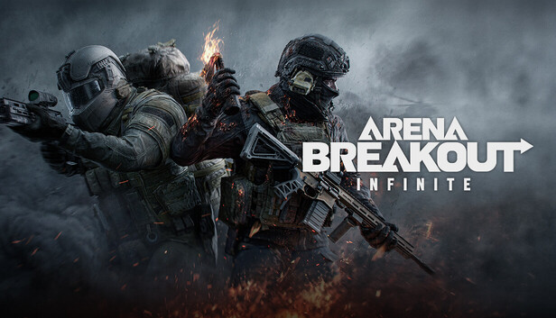
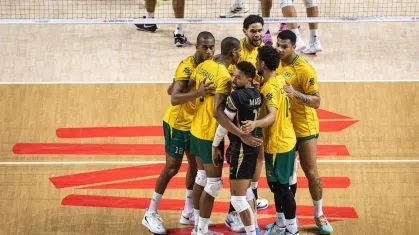

Valorant

VALORANT é um jogo de tiro tático em primeira pessoa desenvolvido pela Riot Games.
As partidas são disputadas entre duas equipes de 5 jogadores.
Cada jogador escolhe um Agente, que possui habilidades únicas.
O objetivo principal é plantar ou desarmar a Spike, além de eliminar a equipe adversária.
O jogo exige boa mira, estratégia, comunicação e trabalho em equipe, sendo bastante popular no cenário competitivo.
Arena Breakout

Arena Breakout é um jogo de tiro tático focado em extração e sobrevivência.
O jogador entra em uma área para procurar armas, equipamentos e outros itens.
O objetivo é pegar o máximo de recursos possível e conseguir escapar com vida.
Se o jogador for eliminado antes de sair, pode perder os itens que carregava.
O jogo combina estratégia, exploração, combate e gerenciamento de equipamentos, tornando cada partida diferente e arriscada.
Volei

Vôlei é um esporte jogado entre duas equipes, geralmente com 6 jogadores de cada lado.
O objetivo é fazer a bola tocar no chão da quadra adversária.
A equipe pode dar até 3 toques antes de passar a bola para o outro lado.
Os principais fundamentos são saque, manchete, levantamento, ataque e bloqueio.
É um esporte que exige agilidade, força, coordenação e trabalho em equipe.
Caracteristica minha minha posição favorita no Volei é levantador